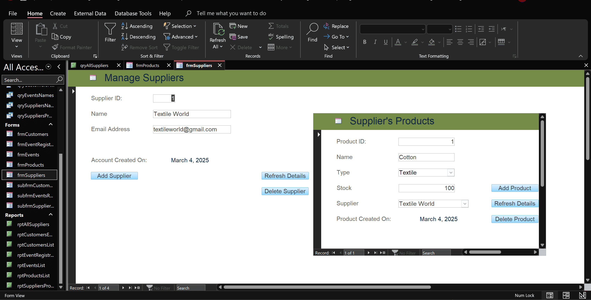

- SQL, ODBC, MS Excel, SQL Server, VBA
- Designing relational schema for reporting and geospatial data visualization
- Configuring ODBC connections to pull live SQL Server data into Excel dashboards
- Building forms, dashboards, and VBA automation
- Preparing technical documentation and stakeholder materials
Excel-ODBC Data Reporting Tool
(Feb 2026 – Present)
- Go (Golang), Fyne, MVC, Git/GitHub
- Self-taught Go and Fyne GUI framework to build a full MVC desktop app
- CSV parsing, UUID-based record identification, in-memory data management, and persistence layer
- Multi-page GUI with full CRUD, menu navigation, and status feedback
- Go unit tests for persistence logic; 3 Git branches across 3 iterative project phases
CSV Record Manager with GUI
(Jan 2026 – Present)
- Java, Servlets/JSP, MySQL, JDBC, Tomcat, MVC, Git/GitHub
- 4-person team, 8 weeks; owned user authentication and vehicle management modules
- Role-based access for Transit Manager and Operator roles
- Abstract inheritance, Factory pattern, DAO interfaces (UserDAO, VehicleDAO), SessionHandler servlet
- Full CRUD vehicle management with 6 tracked attributes
- Relational schema, ER diagram, physical model, UML class and sequence diagrams; Git branching and pull requests
Public Transit Fleet Management System
(Jul – Aug 2025)
- Flutter/Dart, SQLite (Floor), JUnit, Git/GitHub
- 4-person team; Android booking app with OOP design
- Encrypted local storage via EncryptedSharedPreferences
- Collection-based data management with full CRUD
- JUnit tests for valid and invalid input cases; responsive layouts
- Git branching and merge conflict resolution
Airline Booking Android App
(Jun – Aug 2025)

- HTML, CSS, JavaScript, PHP, Tailwind CSS, Docker, Git/GitHub
- Built from scratch with raw HTML/PHP/JS in a web programming course
- Self-taught Tailwind CSS over spring break and refactored the entire UI
- Containerized with Docker, deployed to production via Render connected to GitHub
- Continuously iterated on features and design
Personal Portfolio Website
(May 2025 – Present)
- Agile, SDLC, UML, MS Project, MS Excel
- Led Agile planning for a property management system simulation (DoorLoop)
- Stakeholder analysis, requirements gathering; 8 functional and 4 non-functional requirements
- Produced SRS, WBS, RAID log (12 risks logged), and UML diagrams (use case, sequence, activity)
- Coordinated tasks and milestones across a 4-person team
Agile Project Planning: DoorLoop
(May – Aug 2025)
- Jakarta EE, JSF, JDBC, MySQL, Payara
- Full CRUD student directory web app built on a skeleton project
- JSF pages, managed beans, and DAO pattern
- Deployed on Payara; completed all TODOs and extended functionality beyond requirements
JSF+JDBC Student Directory
(Winter 2026)

- SQL, SQL Server, Microsoft Access
- Led a team of three to design and implement a database-backed management system
- SQL Server backend with a Microsoft Access front-end
- Queries, forms, and reports for data entry and usability
Sewing Shop Management System
(Feb 2025)